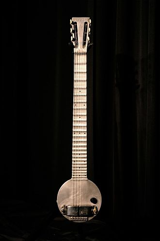
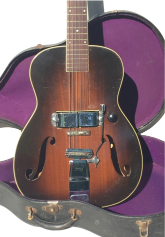
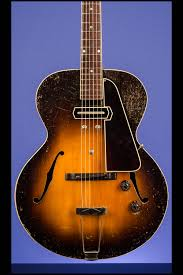

"The Frying Pan"

Many experiments at electrically amplifying the vibrations of a string instrument were made dating back to the early part of the 20th century.
Patents from the 1910s show telephone transmitters were adapted and placed inside violins and banjos to amplify the sound.
Hobbyists in the 1920s used carbon button microphones attached to the bridge; however, these detected vibration from the bridge on top of the instrument, resulting in a weak signal.
With numerous people experimenting with electrical instruments in the 1920s and early 1930s, there are many claimants to have been the first to invent an electric guitar.
"Electro-Spanish Ken Roberts"

By early-mid 1935, Electro String Instrument Corporation had achieved mainstream success with the A-22 "Frying Pan" steel guitar,
and set out to capture a new audience through its release of the Electro-Spanish Model B and the Electro-Spanish Ken Roberts which was the first full 25" scale electric guitar ever produced.
The Electro-Spanish Ken Roberts was revolutionary for its time, providing players a full 25" scale, with 17 frets free of the fretboard.
Unlike other lap-steel electrified instruments produced during the time, the Electro-Spanish Ken Roberts was designed to play standing vertical, upright with a strap.
The demand for amplified guitars began during the big band era; as orchestras increased in size, guitar players soon realized the necessity in guitar amplification & electrification.
Solid Body Guitars
The solid-body electric guitar is made of solid wood, without functionally resonating air spaces.
The first solid-body Spanish standard guitar was offered by Vivi-Tone no later than 1934.
This model featured a guitar-shaped body of a single sheet of plywood affixed to a wood frame.
Another early, substantially solid Spanish electric guitar, called the Electro Spanish, was marketed by the Rickenbacker guitar company in 1935 and made of Bakelite.
By 1936, the Slingerland company introduced a wooden solid-body electric model, the Slingerland Songster 401 (and a lap steel counterpart, the Songster 400).
"Gibson ES-150"

Gibson's first production electric guitar, marketed in 1936, was the ES-150 model ("ES" for "Electric Spanish", and "150" reflecting the $150 price of the instrument, along with matching amplifier).
The ES-150 guitar featured a single-coil, hexagonally shaped "bar" pickup, which was designed by Walt Fuller. It became known as the "Charlie Christian" pickup (named for the great jazz guitarist who was among the first to perform with the ES-150 guitar).
The ES-150 achieved some popularity but suffered from unequal loudness across the six strings.
The Les Paul
A functionally solid-body electric guitar was designed and built in 1940 by Les Paul from an Epiphone acoustic archtop.
Lester Williams Polsfuss playing a Gibson Les Paul guitarLester William Polsfuss (June 9, 1915 – August 12, 2009), known as Les Paul, was an American jazz, country, and blues guitarist, songwriter, luthier, and inventor.
He was one of the pioneers of the solid-body electric guitar.
Paul taught himself how to play guitar, and while he is mainly known for jazz and popular music, he had an early career in country music. He is credited with many recording innovations.
Although he was not the first to use the technique, his early experiments with overdubbing (also known as sound on sound), delay effects such as tape delay, phasing effects and multitrack recording were among the first to attract widespread attention.
 Electric Guitars
Electric Guitars